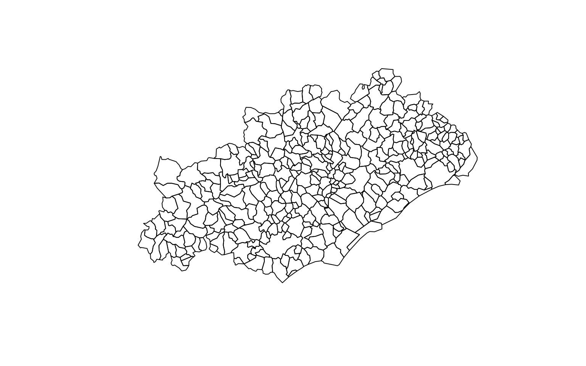
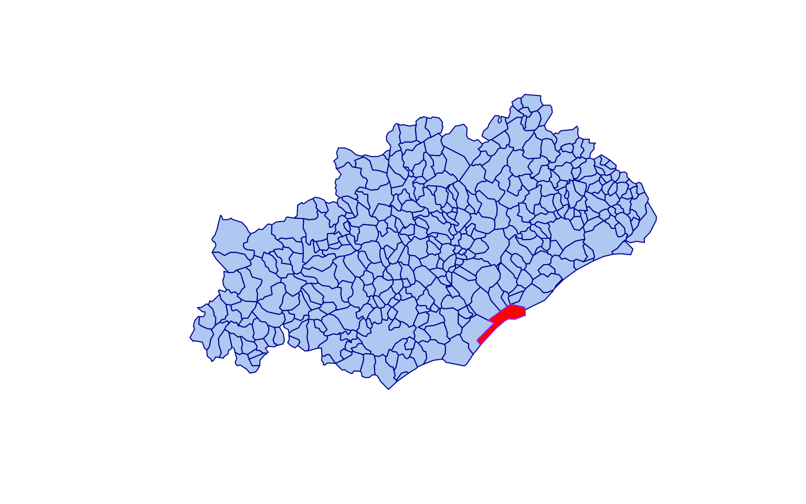
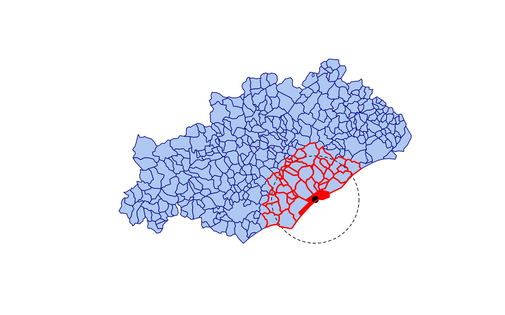
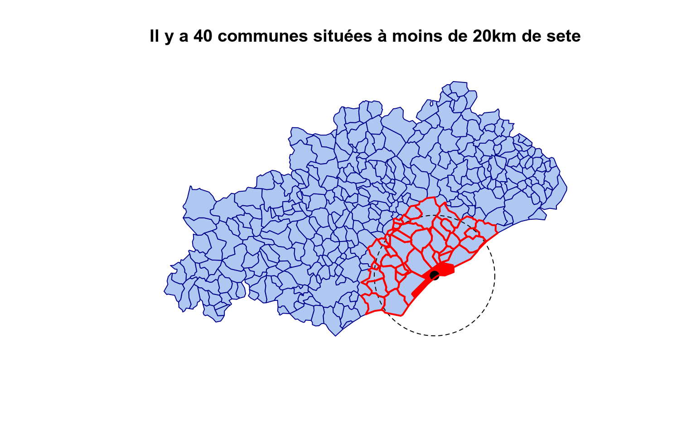
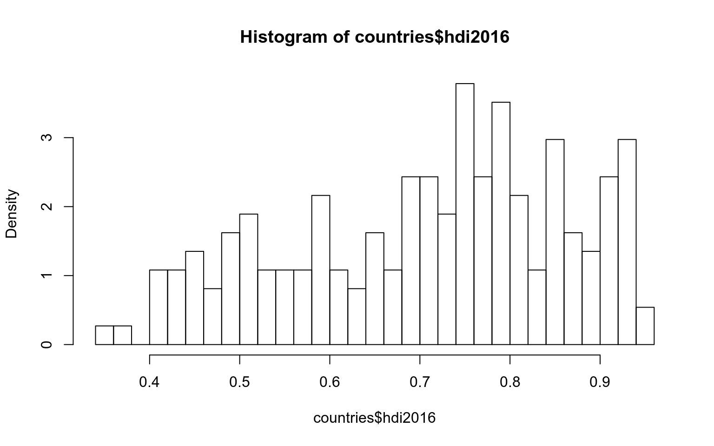
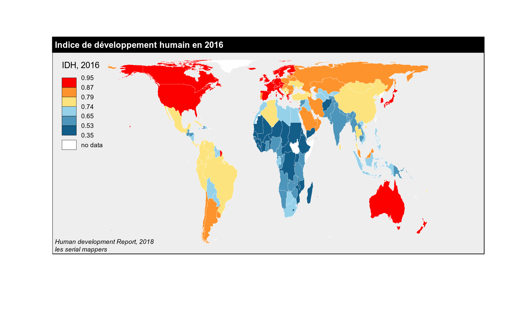
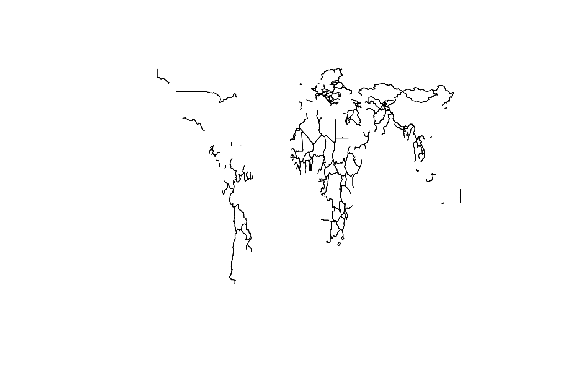
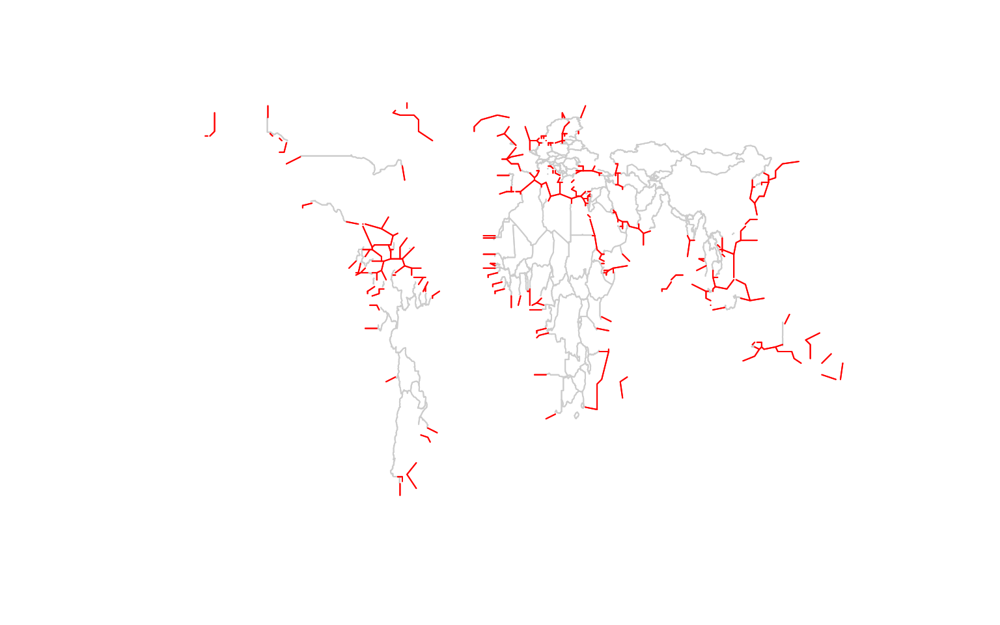
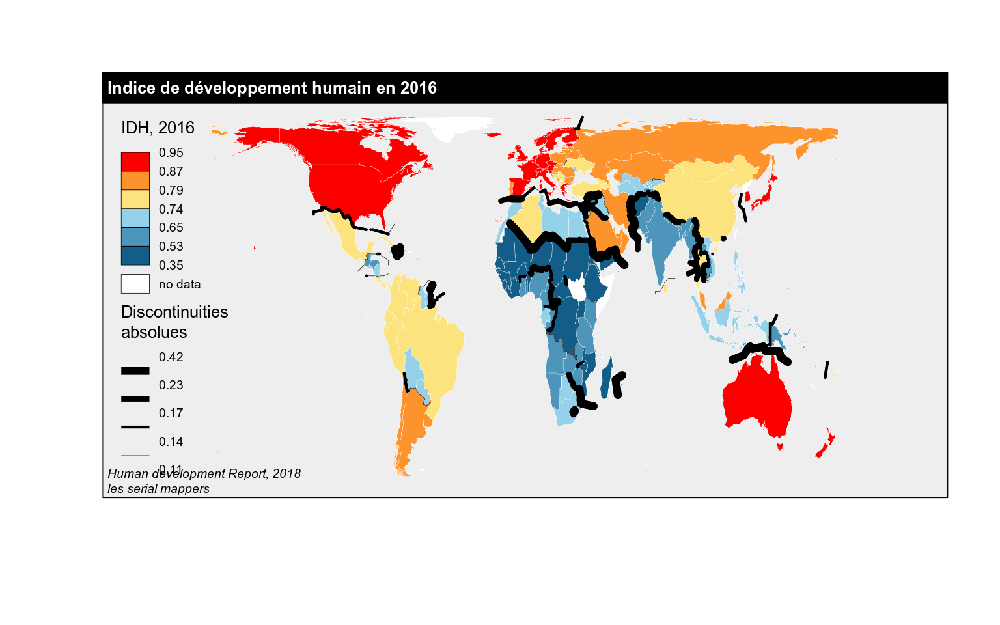

GÉO-VISUALISATION AVEC R
Action nationale de formation
MATE SHS
GÉO-VISUALISATION AVEC R
Action nationale de formation
MATE SHS
Cette formation de 3 heures 30 porte sur la visualisation de données géographiques sous R. Y sont abordées les traitements SIG de base, la cartographie thématique (cartes en figurés proportionnels, cartes choroplèthes, cartes de typologie, etc) et des cartes reposant sur des techniques plus avancées comme les cartes sur grille ou les cartes de discontinuité.
Sont ici principalement utilisés les packages sf (manipulation de données spatiales) et cartography (cartographie thématique). Chaque exemple propose une chaine de traitement depuis le chargement des données, leur mise en forme, jusqu’à la mobilisation de méthodes adaptées permettant de répondre à des questions spatiales.
Les exemples proposés sont basés sur différentes échelles, du local (région Occitanie) en passant par l’Europe et le Monde.
Pré-réquis
Les packages
Sont décrits ici la version de R avec laquelle a été produit ce support de formation ainsi que les packages qui seront utilisés dans la formation et leur version respective.
library(devtools)
session_info(pkgs = c("cartography","sf"), include_base = FALSE)## Session info -------------------------------------------------------------## setting value
## version R version 3.4.4 (2018-03-15)
## system x86_64, linux-gnu
## ui X11
## language (EN)
## collate en_US.UTF-8
## tz Europe/Paris
## date 2018-09-27## Packages -----------------------------------------------------------------## package * version date source
## abind 1.4-5 2016-07-21 CRAN (R 3.4.4)
## cartography 2.1.2 2018-09-18 CRAN (R 3.4.4)
## class 7.3-14 2015-08-30 CRAN (R 3.4.2)
## classInt 0.2-3 2018-04-16 CRAN (R 3.4.4)
## curl 3.2 2018-03-28 CRAN (R 3.4.4)
## DBI 1.0.0 2018-05-02 CRAN (R 3.4.4)
## digest 0.6.17 2018-09-12 CRAN (R 3.4.4)
## e1071 1.7-0 2018-07-28 CRAN (R 3.4.4)
## graphics * 3.4.4 2018-04-21 local
## grDevices * 3.4.4 2018-04-21 local
## grid 3.4.4 2018-04-21 local
## httr 1.3.1 2017-08-20 CRAN (R 3.4.4)
## jpeg 0.1-8 2014-01-23 CRAN (R 3.4.4)
## jsonlite 1.5 2017-06-01 CRAN (R 3.4.4)
## lattice 0.20-35 2017-03-25 CRAN (R 3.4.2)
## magrittr 1.5 2014-11-22 CRAN (R 3.4.4)
## MASS 7.3-49 2018-02-23 CRAN (R 3.4.3)
## methods * 3.4.4 2018-04-21 local
## mime 0.5 2016-07-07 CRAN (R 3.4.4)
## openssl 1.0.2 2018-07-30 CRAN (R 3.4.4)
## plyr 1.8.4 2016-06-08 CRAN (R 3.4.4)
## png 0.1-7 2013-12-03 CRAN (R 3.4.4)
## prettymapr 0.2.2 2017-09-20 CRAN (R 3.4.4)
## R6 2.2.2 2017-06-17 CRAN (R 3.4.4)
## raster 2.6-7 2017-11-13 CRAN (R 3.4.4)
## Rcpp 0.12.18 2018-07-23 CRAN (R 3.4.4)
## rgdal 1.3-4 2018-08-03 CRAN (R 3.4.4)
## rgeos 0.3-28 2018-06-08 CRAN (R 3.4.4)
## rjson 0.2.20 2018-06-08 CRAN (R 3.4.4)
## rosm 0.2.2 2017-04-07 CRAN (R 3.4.4)
## sf 0.6-3 2018-05-17 CRAN (R 3.4.4)
## sp 1.3-1 2018-06-05 CRAN (R 3.4.4)
## spData 0.2.9.4 2018-09-15 CRAN (R 3.4.4)
## stats * 3.4.4 2018-04-21 local
## tools 3.4.4 2018-04-21 local
## units 0.6-1 2018-09-21 CRAN (R 3.4.4)
## utils * 3.4.4 2018-04-21 localPour exécuter les programmes proposés par la formation, installez / mettez à jour R (version 3.5.1 minimum), R Studio. Lancez ensuite R studio et installez les packages au moyen des commandes suivantes (prévoir bien 10 minutes)
# install.packages("sf")
# install.packages("devtools")
# install.packages("cartography")
# install.packages("countrycode")
# install.packages("readxl")
# install.packages("animation")
# install.packages("rmapshaper")
# install.packages("rnaturalearthdata")
# install.packages("rnaturalearth")
# install.packages("cartogram")
# install.packages("reshape2")
# install.packages("eurostat")- Le package sf est un package qui permet d’importer, gérer et transformer des données géographiques (gestion des projections, opérations SIG).
- Le package cartography permet de créer et intégrer des cartes thématiques dans sa chaine de traitement en R. Il permet des représentations cartographiques tels que les cartes en symboles proportionnels, des cartes choroplèthes, des typologies, des cartes de flux ou des cartes de discontinuité. Il offre également des fonctions qui permettent d’améliorer la réalisation de la carte, comme des palettes de couleur, des éléments d’habillage (échelle, flèche du nord, titre, légende…), d’y rattacher des labels ou d’accéder à des APIs cartographiques.
- Le package…
Téléchargez les données
Téléchargez les données sur la page github. Décompressez les données sur votre espace de travail.
Lien github à ajouter
Exo 1 - Prise en main
Commandes de base
Définissez votre répertoire de travail.
setwd("Votre_repertoire_de_travail")Consulter le contenu. Et regarder ce qu’il y a dans le répertoire “data”
list.files()## [1] "data" "data.zip" "outputs"
## [4] "pics" "prg" "Vizualisation_files"
## [7] "Vizualisation.html" "Vizualisation.Rmd"list.files("data")## [1] "download" "Europe" "France" "Hérault" "Occitanie" "world"Import d’une couche SIG dans R avec le package sf. Pacakge basé sur GEOS (Geometry Engine Open Source) et GDAL (Geospatial Data Abstraction Library).
library("sf")## Linking to GEOS 3.6.2, GDAL 2.2.3, proj.4 4.9.3communes <- st_read(dsn = "data/Hérault/communes.shp", stringsAsFactors = F)## Reading layer `communes' from data source `/home/nlambert/ownCloud/ANF2018 - R geoviz/data/Hérault/communes.shp' using driver `ESRI Shapefile'
## Simple feature collection with 343 features and 5 fields
## geometry type: POLYGON
## dimension: XY
## bbox: xmin: 662675 ymin: 6234874 xmax: 796333 ymax: 6319348
## epsg (SRID): NA
## proj4string: +proj=lcc +lat_1=49 +lat_2=44 +lat_0=46.5 +lon_0=3 +x_0=700000 +y_0=6600000 +ellps=GRS80 +units=m +no_defsVoir la table atributaire
communes## Simple feature collection with 343 features and 5 fields
## geometry type: POLYGON
## dimension: XY
## bbox: xmin: 662675 ymin: 6234874 xmax: 796333 ymax: 6319348
## epsg (SRID): NA
## proj4string: +proj=lcc +lat_1=49 +lat_2=44 +lat_0=46.5 +lon_0=3 +x_0=700000 +y_0=6600000 +ellps=GRS80 +units=m +no_defs
## First 10 features:
## INSEE_COM NOM_COMM STATUT SUPERFICIE
## 1 34029 BELARGA Commune simple 415
## 2 34290 SAINT-VINCENT-DE-BARBEYRARGUES Commune simple 222
## 3 34032 BEZIERS Sous-prfecture 9567
## 4 34082 COMBAILLAUX Commune simple 902
## 5 34108 FRONTIGNAN Chef-lieu canton 3984
## 6 34166 MONTBLANC Commune simple 2716
## 7 34066 CAZEVIEILLE Commune simple 1619
## 8 34296 SAUSSINES Commune simple 630
## 9 34269 SAINT-JEAN-DE-MINERVOIS Commune simple 3277
## 10 34012 ARGELLIERS Commune simple 5065
## NOM_DEPT geometry
## 1 HERAULT POLYGON ((742075 6272005, 7...
## 2 HERAULT POLYGON ((770896 6289405, 7...
## 3 HERAULT POLYGON ((718759 6244261, 7...
## 4 HERAULT POLYGON ((761606 6284489, 7...
## 5 HERAULT POLYGON ((758738 6257679, 7...
## 6 HERAULT POLYGON ((728067 6248191, 7...
## 7 HERAULT POLYGON ((762395 6294296, 7...
## 8 HERAULT POLYGON ((784582 6294234, 7...
## 9 HERAULT POLYGON ((686897 6252592, 6...
## 10 HERAULT POLYGON ((756922 6287661, 7...head(communes)## Simple feature collection with 6 features and 5 fields
## geometry type: POLYGON
## dimension: XY
## bbox: xmin: 710431 ymin: 6244261 xmax: 771300 ymax: 6292043
## epsg (SRID): NA
## proj4string: +proj=lcc +lat_1=49 +lat_2=44 +lat_0=46.5 +lon_0=3 +x_0=700000 +y_0=6600000 +ellps=GRS80 +units=m +no_defs
## INSEE_COM NOM_COMM STATUT SUPERFICIE
## 1 34029 BELARGA Commune simple 415
## 2 34290 SAINT-VINCENT-DE-BARBEYRARGUES Commune simple 222
## 3 34032 BEZIERS Sous-prfecture 9567
## 4 34082 COMBAILLAUX Commune simple 902
## 5 34108 FRONTIGNAN Chef-lieu canton 3984
## 6 34166 MONTBLANC Commune simple 2716
## NOM_DEPT geometry
## 1 HERAULT POLYGON ((742075 6272005, 7...
## 2 HERAULT POLYGON ((770896 6289405, 7...
## 3 HERAULT POLYGON ((718759 6244261, 7...
## 4 HERAULT POLYGON ((761606 6284489, 7...
## 5 HERAULT POLYGON ((758738 6257679, 7...
## 6 HERAULT POLYGON ((728067 6248191, 7...View(communes)L’instruction plot permet d’afficher la couche. L’instruction st_geometry permet d’accéder à la variable définissant les géométries.
plot(st_geometry(communes))
Afficher la couche avec des parametres graphiques
plot(st_geometry(communes), col="#aec8f2", border="darkblue", lwd=1)
Introduction au SIG avec R / Manipuler les informations spatiales
Nous cherchons à identifier les communes qui ont une partie de leur territoire situé à moins de 20 km du centre de Sete.
Nous commencçons par extraire la commune de Sète.
macommune <- "SETE"
monpoly <- communes[communes$NOM_COMM == macommune,]
plot(st_geometry(communes), col="#aec8f2", border="darkblue", lwd=1)
plot(st_geometry(monpoly), col="red", border="purple", lwd=1, add=T)
Extraitre le centroide de la commune de Sete.
moncentre <- st_centroid(x = monpoly)## Warning in st_centroid.sf(x = monpoly): st_centroid assumes attributes are
## constant over geometries of xplot(st_geometry(communes), col="#aec8f2", border="darkblue", lwd=1)
plot(st_geometry(monpoly), col="red", border="purple", lwd=1, add=T)
plot(st_geometry(moncentre), pch=20, col="black", cex=2, add=T)Calculer une zone tampon
mydist <- 20000
buff <- st_buffer(x = st_geometry(moncentre), dist=mydist)
plot(st_geometry(communes), col="#aec8f2", border="darkblue", lwd=1)
plot(st_geometry(monpoly), col="red", border="purple", lwd=1, add=T)
plot(st_geometry(moncentre), pch=20, col="black", cex=2, add=T)
plot(buff, col=NA, border="black", lty=2,add=T)Récupérer la liste des communes
communes$buff <- st_intersects(st_geometry(communes), st_geometry(buff), sparse = FALSE)
head(communes)## Simple feature collection with 6 features and 6 fields
## geometry type: POLYGON
## dimension: XY
## bbox: xmin: 710431 ymin: 6244261 xmax: 771300 ymax: 6292043
## epsg (SRID): NA
## proj4string: +proj=lcc +lat_1=49 +lat_2=44 +lat_0=46.5 +lon_0=3 +x_0=700000 +y_0=6600000 +ellps=GRS80 +units=m +no_defs
## INSEE_COM NOM_COMM STATUT SUPERFICIE
## 1 34029 BELARGA Commune simple 415
## 2 34290 SAINT-VINCENT-DE-BARBEYRARGUES Commune simple 222
## 3 34032 BEZIERS Sous-prfecture 9567
## 4 34082 COMBAILLAUX Commune simple 902
## 5 34108 FRONTIGNAN Chef-lieu canton 3984
## 6 34166 MONTBLANC Commune simple 2716
## NOM_DEPT geometry buff
## 1 HERAULT POLYGON ((742075 6272005, 7... TRUE
## 2 HERAULT POLYGON ((770896 6289405, 7... FALSE
## 3 HERAULT POLYGON ((718759 6244261, 7... FALSE
## 4 HERAULT POLYGON ((761606 6284489, 7... FALSE
## 5 HERAULT POLYGON ((758738 6257679, 7... TRUE
## 6 HERAULT POLYGON ((728067 6248191, 7... FALSERécupérer le nombre de communes à moins de 20 km
nb <- dim(communes[communes$buff == T,])
nb[1]## [1] 40Extraction et affichage des communes
communes20km <- communes[communes$buff == TRUE,]
plot(st_geometry(communes), col="#aec8f2", border="darkblue", lwd=1)
plot(st_geometry(monpoly), col="red", border="purple", lwd=1, add=T)
plot(st_geometry(moncentre), pch=20, col="black", cex=2, add=T)
plot(buff, col=NA, border="black", lty=2,add=T)
plot(st_geometry(communes20km), col=NA, lwd=2, border="red", add=T)
Ajout d’un titre
plot(st_geometry(communes), col="#aec8f2", border="darkblue", lwd=1)
plot(st_geometry(monpoly), col="red", border="purple", lwd=1, add=T)
plot(st_geometry(moncentre), pch=20, col="black", cex=2, add=T)
plot(buff, col=NA, border="black", lty=2,add=T)
plot(st_geometry(communes20km), col=NA, lwd=2, border="red", add=T)
montitre <- paste0("Il y a ", nb[1], " communes situées à moins de ", mydist/1000, "km de ",tolower(macommune))
title(montitre)
Export (si besoin)
st_write(obj = communes20km, dsn = "outputs/resultat.shp")A vous de jouer !
Reproduisez cette procédure avec la commune et la distance de votre choix.
Pour accéder au listing des communes d’Hérault
communes$NOM_COMMExo 2 - Cartes en figurés proportionnels
Objectifs :
- Thématique : Réaliser une carte des catégories Socio professionnelles.
- Espace d’étude : Occitanie, communes
- Visualisation associée : carte en figurés proportionnels (+ cartogrammes de Dorling)
- packages utilisés : sf, cartography, cartogram, readxl
Créer un nouveau fichier “Exo2.R”.
Chargement et préparation des données
Pour bien commencer, il est fondamental de jeter un oeil au fichier d’entrée pour comprendre son organisation et savoir comment l’importer sous R.
Ouvrez le fichier data/France/INSEE/pop-act2554-csp-cd-6814.xls Nous nous intéressons ici à l’onglet “COM_2014”.
library("sf")
library("readxl")Visualisation : carte en figuré proportionnel
library("cartography")variable visuelle taille adaptée aux caractères quantitatifs absolus.
Visualisation : carte combinant figuré proportionnel et typologie
variable visuelle taille + variable visuelle couleur
Visualisation : cartogramme de Dorling
library("cartogram")Exo 3 -
Chargement des packages nécessaires

xxx

xxx
Exo 4 - Cartes de discontinuité
Objectifs :
- Thématique : Les inégalités d’IDH et/ou d’espérance de vie
- Espace d’étude : Le Monde, pays.
- Visualisation associée : carte chorplèthe, discontinuités
- packages utilisés : sf, cartography, rnaturalearth, readxl, countrycode

Import du fond de carte
méthode 1 : à la main (après téléchargement sur le site Natural Earth)
library("sf")
countries <- st_read(dsn = "data/world/naturalearth/ne_110m_admin_0_countries.shp", stringsAsFactors = F) Méthode 2 : directement via R
library("sf")
url <- "https://www.naturalearthdata.com/http//www.naturalearthdata.com/download/110m/cultural/ne_110m_admin_0_countries.zip"
download.file(url = url, destfile = "data/download/countries.zip")
unzip("data/download/countries.zip", exdir = "data/download", unzip = "internal")
file.remove("data/download/countries.zip")
countries <- st_read(dsn = "data/download/ne_110m_admin_0_countries.shp", stringsAsFactors = F)Méthode 3 : directement via R
library("rnaturalearth")
countries <- ne_countries(scale = 50, type = "countries", continent = NULL,
country = NULL, geounit = NULL, sovereignty = NULL,
returnclass = "sf")Le fond de carte peut être visualisé avec l’instruction plot
plot(st_geometry(countries))
On ne conserve que les champs utiles. On les renomme.
countries <- countries[,c("adm0_a3", "admin", "geometry")]
colnames(countries) <- c("id","name","geometry")On Supprime l’Antarctique
countries <- countries[countries$id != "ATA",]On supprime les lignes vides
countries <- countries[!is.na(countries$id),]plot(st_geometry(countries))
Import des données atributaires
Import des données sur l’éspérance de vie (source : Banque mondiale)
library("readxl")
file <-"data/world/worldbank/API_SP.DYN.LE00.IN_DS2_en_excel_v2_10081535.xls"
sheet <- "Data"
lifexp <- data.frame(read_excel(file, skip = 3, sheet = sheet))
lifexp <- lifexp[,c("Country.Code","Country.Name","X2016")]
colnames(lifexp) <- c("id","name","lifexp2016")
lifexp$lifexp2016 <- as.numeric(as.character(lifexp$lifexp2016))Import des données sur l’Indice de deveoppement humain (source : Human Development Report)
file <-"data/world/hdr/Human Development Index (HDI).csv"
hdi <- read.csv2(file = file, sep = ",",skip = 1)
hdi <- hdi[,c("Country","X2016")]head(hdi,4)## Country X2016
## 1 Afghanistan 0.494
## 2 Albania 0.782
## 3 Algeria 0.753
## 4 Andorra 0.856Le tableau de données sur l’IDH ne possède pas de codes géographiques, mais uniquement le nom des pays. Cela rend la jointure avec le fond de carte compliquée. Une solution : le package countrycode
library("countrycode")
hdi$id <- countrycode(hdi$Country, 'country.name', 'iso3c')## Warning in countrycode(hdi$Country, "country.name", "iso3c"): Some values were not matched unambiguously: Eswatini (Kingdom of)Un peu de mise en forme. Les codes sont bien là. C’est presque magique… Mais attention, dans la pratique, une vérification manuelle s’impose.
hdi <- hdi[,c("id","Country","X2016")]
colnames(hdi) <- c("id","name","hdi2016")
hdi$hdi2016 <- as.numeric(as.character(hdi$hdi2016))
head(hdi,4)## id name hdi2016
## 1 AFG Afghanistan 0.494
## 2 ALB Albania 0.782
## 3 DZA Algeria 0.753
## 4 AND Andorra 0.856Cartographie
Chargement du package
library("cartography")Changer la projection du fond de carte (voir le site http://spatialreference.org)
countries <- st_transform(countries, "+proj=cea +lon_0=0 +lat_ts=45 +x_0=0 +y_0=0 +ellps=WGS84 +units=m +no_defs ")
plot(st_geometry(countries))
Jointures des deux fichiers de données
countries <- merge(countries, lifexp, by="id", all.x=TRUE)
countries <- merge(countries, hdi, by="id", all.x=TRUE)
countries <- countries[,c("id","name.x","lifexp2016","hdi2016","geometry")]
colnames(countries)[2] <- "name"On travaille sur l’indice de développement humain
analyse de la distribution
var <- countries$hdi2016
hist(countries$hdi2016, probability = TRUE, nclass = 30)
On choisit une discretisation par la méthode des quantiles sans classe centrale
breaks <- getBreaks(v = var, nclass = 6, method = "quantile")
cols <- carto.pal(pal1="blue.pal", n1 = 3, pal2 = "orange.pal", n2 = 3, middle = FALSE, transparency = FALSE)Réalisation de la carte
layoutLayer(extent = countries,
bg="#EEEEEE",
title = "Indice de développement humain en 2016",
scale = NULL,
sources = "Human development Report, 2018",
author = "les serial mappers"
)
choroLayer(x = countries,
var = "hdi2016",
breaks = breaks,
col = cols,
border = "white",
lwd=0.2,
add = TRUE,
legend.pos = "topleft",
legend.title.txt = "IDH, 2016",
legend.values.rnd = 2)
Et si on ajoutait des lignes de discontinuités à cette carte?
L’instruction getBorders (du package cartography) permet d’extraire les frontières entre les unités spatiales.
borders <- getBorders(countries)
plot(st_geometry(borders), col="black", lwd=1)
Quid des discontinuités paritimes ? Par exemple entre l’Italie et la Tunisie ? Ou entre le Maroc et l’Espagne ? L’instruction getOuterBorders (package cartography) permet de les générer. Cette instruction peut prendre un peu de temps.
outer <- getOuterBorders(x = countries, res = 100000, width=500000)
plot(st_geometry(borders), col="#CCCCCC", lwd=1)
plot(st_geometry(outer), col="red", lwd=1, add=T)
On assemble les deux couches avec rbind
b <- rbind(borders,outer)Tout est prêt pour réaliser une carte de discontinuités
# 1 - la carte choroplèthe
layoutLayer(extent = countries,
bg="#EEEEEE",
title = "Indice de développement humain en 2016",
scale = NULL,
sources = "Human development Report, 2018",
author = "les serial mappers"
)
choroLayer(x = countries,
var = "hdi2016",
breaks = breaks,
col = cols,
border = "white",
lwd=0.2,
add = TRUE,
legend.pos = "topleft",
legend.title.txt = "IDH, 2016",
legend.values.rnd = 2)
# 2 - les discontinuités
discLayer(x = b, df = countries,
var = "hdi2016", col="black", nclass=4,
method="quantile", threshold = 0.25, sizemin = 0.2,
sizemax = 8, type = "abs",
legend.title.txt = "Discontinuities\nabsolues",
legend.pos = "bottomleft", add=TRUE)
BONUS
Utiliser des données OSM
Ressources
- BEGUIN Michèle, PUMAIN Denise, La représentation des données géographiques, Statistique et cartographie, coll. Cursus, Armand Colin, nouvelle édition 2000, 192p.
- BERTIN Jacques, Sémiologie graphique, Monton-Gauthier-Villars, 1967, 1973, 432 p. Disponible à ce jour dans la collection Réimpression de l’EHESS, 1998.
- BERTIN Jacques, La graphique et le traitement graphique de l’information, Flammarion, 1977, 280 p.
- BRUNET Roger, La carte mode d’emploi, Fayard-Reclus, 1987, 270p.
- ElementR (Groupe), R et espace, traitement de l’information géographique, 2014, Framabook.
- LAMBERT Nicolas : Carnet de recherche neocarto : https://neocarto.hypotheses.org
- LAMBERT Nicolas, ZANIN Christine : « Manuel de cartographie. Principes, méthodes, applications », cursus, Armand Colin, 18 mai 2016, 224p.
- Giraud Timothée : Carnet de recherche rgeomatic : https://rgeomatic.hypotheses.org/
- ZANIN Christine, TREMELO Marie-Laure, Savoir faire une carte, Aide à la conception et à la réalisation d’une carte thématique univariée, coll. Sup géographie, Belin, 2003, 200p.